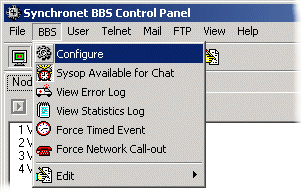
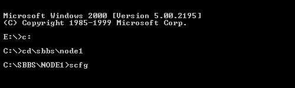
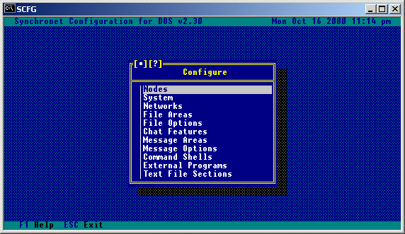
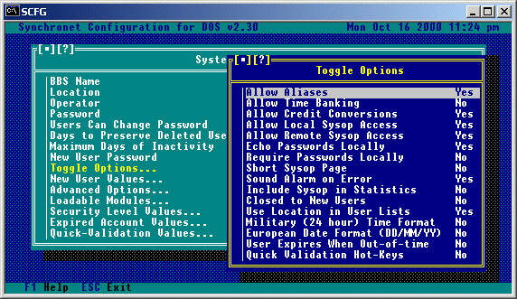
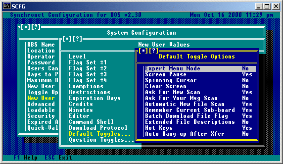
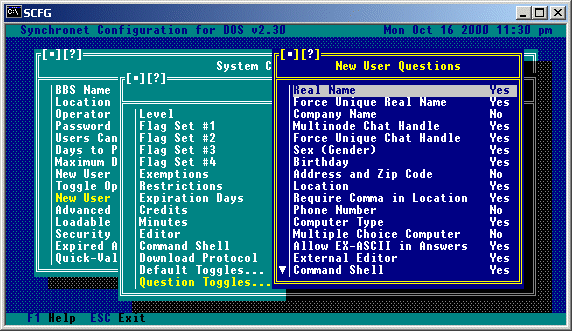
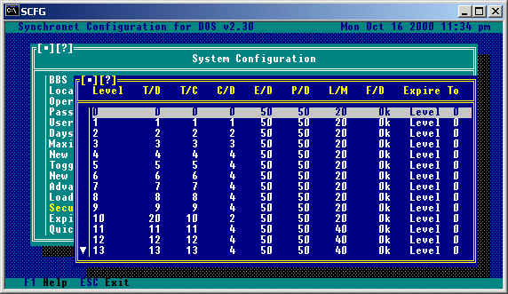
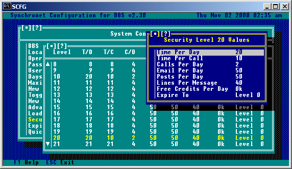
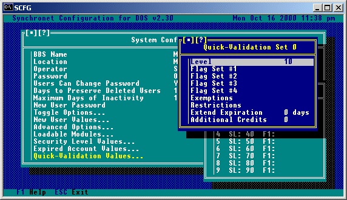

To run SCFG from the GUI in v3.0 you can load it from the Synchronet Control Panel (SBBSCTRL) by selecting BBS and then Configure from the Pull Down Menu at the top of SBSCTRL.

SCFG is the Synchronet Configuration Utility which can be executed from the "Waiting for call" screen by hitting 'C' or from DOS by typing SCFG from any node directory. Example:

SCFG is a separate executable program. Once SCFG has initialized, you will see a main menu titled "Configure" which looks something like this:
 To manipulate the lightbar, use the up and down arrow keys or type a letter or number in the option you wish to highlight. To highlight the first option of the menu, hit HOME. To highlight the last option of the menu, hit END. You'll notice that if you hit up arrow when the lightbar is at the first option of the menu, the last option will become highlighted. This wrap effect also occurs when hitting the down arrow when the lightbar is at the last option of the menu. To select the current highlighted option, hit ENTER. To exit SCFG, hit ESC.
Under "System", set your system's name (BBS Name), the sysop's name (You), the system location (City, State), and system password. The system password you enter here will be required for any remote sysop operations and is prompted for with an "SY:" prompt. Under "Message Options", set your system's QWK ID (Up to 8 character BBS name abbreviation). Under "Toggle Options" set "Allow Aliases" to "Yes" or "No" depending on if you want users to be known by their real names on your BBS or a personal alias.
Remember that at any time within SCFG, you can hit the F1 key to get online help about the current configuration window. Following is a more specific list of the commands available in the SCFG under System options.
BBS ID for QWK Packets: This is the ID that will be used in QWK packets. It is important that you set this to an abbreviation of your BBS name before users start using the QWK functions of your BBS. Only valid DOS filename characters can be used and the ID must begin with an alphabetic character. This ID will also serve as your system's QWK Network address, should you choose to join a QWK message network. Local Time Zone: This should be set to the time zone where your BBS is located. Maximum Retry Time: This is the maximum number of seconds the Synchronet message base library will wait for a locked message base to become unlocked. Under normal conditions, message bases are only left locked for an extremely short period of time. Maximum QWK Messages: This is the maximum number of messages which will be packed when a QWK packet is created. If the number of new messages to be packed exceeds this, the packing will be stopped after packing this number of messages. Setting this value to 0 sets the number of messages per packet to unlimited. Private e-mail is not included in the total number of messages and QWK network nodes are automatically exempt from this maximum. Pre-pack QWK Requirements: If this option is used (not blank), Synchronet will pre-pack any new messages into a QWK packet in the DATA\FILE directory for each user that meets this requirement. When that user calls to download their packet, it will automatically extract the pre-packed QWK (if it exists) and append to it. It is mainly intended for QWKnet nodes that feed from your BBS, but can also be used for long distance users that wish to save connect time and always read their messages via QWK. Purge E-mail by Age: This will allow electronic mail for your users (stored in DATA\MAIL.*) to be purged after a specific number of days (read or unread). Purge Deleted E-mail: This option can be set to "Daily" or "Immediately". If set to "Immediately", e-mail marked for deletion will be physically removed from the e-mail database immediately after the user exits the reading mail menu. If set to "Daily" (the suggested setting), e-mail is marked for deletion isn't physically removed from the database until the automatic daily event executes (sometime after midnight). Duplicate E-mail Checking: This option allows the setting of a number of message CRCs to be kept to check e-mail to insure that it is not a duplicate of another piece of e-mail. This option should be set to 0 (disabled) unless you specifically want duplicate e-mail disallowed, in which case a value of 2000 should be sufficient. Allow Anonymous E-mail: Setting this option to Yes will allow users with the 'A' exemption to send anonymous e-mail. Allow Quoting in E-mail: To allow users to quote from e-mail, this option should be set to Yes. Allow Uploads in E-mail: To allow users to attach files to e-mail, this option must be set to Yes. Allow Forwarding to NetMail: If you allow users to send NetMail on your BBS and want to allow your users to set their account to forwarding their e-mail to a NetMail address, set this option to Yes. Kill Read E-mail: If you would like to have any e-mail that has been read by the recipient automatically deleted by the message base maintenance program (SMBUTIL) set this option to yes. Users Can View Deleted Messages: This option allows all users or sysops/sub-ops the ability to view messages (posts/e-mail) marked for deletion (and optionally undelete them) before they are permanently removed from the message base. Extra Attribute Codes...: This option will give you a sub-menu of toggle options. These options tell Synchronet whether or not it should interpret color codes which are supported by other BBS packages.
BBS Name:
This is the name of the BBS.
Location:
This is the city, state and/or other pertinent location information.
Operator:
This is the name of the system operator. Doesn't have to be the same
as user #1.
Password:
This is the super-secret system password that only sysops should know.
Users Can Change Password:
If you want enhanced system security, it is suggested that you force
users to keep the original randomly generated password they were
assigned by setting this option to No. If you do allow users to change
their passwords, you can make them change their password periodically
with this selection.
Days to Preserve Deleted Users:
If a user is deleted, his slot will be preserved for this many days
since his last logon date. Preserved slots will not be written over
by new users. Preserved slots may be undeleted by the sysop.
Maximum Days of Inactivity:
If you wish that users that haven't logged on in a certain number of
days be automatically deleted, set this value to the maximum number
of days a user can be inactive before he is deleted. Users can be
exempted from the automatic deletion with the 'P' exemption. Setting
this value to 0 disables this feature (Unlimited inactivity).
New User Password:
If this field has a value, new users will have to enter this password
correctly before being able apply for access.
Selecting this option will bring you to the following sub-menu:

Allow Aliases:
If you wish the users of the BBS to be allowed to use aliases publicly,
set this option to Yes.
Allow Time Banking:
Set this option to Yes to allow users to store their time in a time
bank, or to convert their credits to time via the BBS.
Allow Credit Conversions:
Setting this option to Yes will allow users to be able to convert
credits to time.
Allow Local Sysop Access:
To be able to perform sysop actions locally, this option should be set
to Yes.
Allow Remote Sysop Access:
To be able to perform sysop actions remotely, this option should be set
to Yes.
Echo Passwords Locally:
If this option is set to No, all BBS passwords will not be displayed
locally (characters will be replaced by an X). This includes passwords
entered during logon, passwords in the user editor, as well as
passwords normally displayed on the status line.
Require Passwords Locally:
If this option is set to No the BBS will not ask for a password to be
entered when performing local operations.
Short Sysop Page:
If set to Yes, this sysop page will be a short series of beeps,
otherwise a continuous sysop page will be used.
Sound Alarm on Error:
If the above option (beep locally) is toggled off, but you still wish
to have errors produce an audible alarm, you should toggle this option
to Yes.
Include Sysop in Statistics:
It is suggested that you set this option to No, so that the sysop's
activity on the BBS is not included in the usage statistics.
Closed to New Users:
If you wish to disallow access to any new users, set this option to
Yes.
Use Location In User Lists:
If you wish the location (City, State) of the user to be displayed
in user listings instead of the user note, set this option to Yes.
Setting this option to No will display the user's note (sysop created)
if one has been created. The option should be set to Yes if using
Caller-ID since the user's note may contain their phone number.
Military (24 hour) Time Format:
Use this option to toggle your BBS between 12 and 24 hour time formats.
European Date Format (DD/MM/YY):
This option should ONLY be toggle to Yes if you are in a European
country which uses this date format. All countries using the MM/DD/YY
format should leave this option set to No. If your BBS has been running
for any length of time with this option set to No, you should NOT
change it to Yes.
User Expires When Out-of-time:
Useful for BBSs which charge users based on time, this option, when set
to Yes, will set a user to the expired account values once the user's
time runs out.
Quick Validation Hot-Keys:
If this option is set to No, the quick validation hot keys will be
disabled.
This option allows you to modifiy the security values assigned to a new user after he completes his validation feedback. You can also set the number of credits and minutes new users start off with. If you have configured an alternate command shell or external editors, you may select one of these as the default for new users. See User Edit for more information about user account values.

The 'Default Toggles' are used to set the account defaults that users will have when they log on to the system as a new user. These account defaults can be changed by the user at logon, or while on the system from the user defaults menu.

The 'Question Toggles' are used to enable/disable the different questions which new users will be asked when logging on to the BBS. The 'Force Unique...' question toggles are used to force users to pick a string that is not being used by any of the other users currently in the sytem user list.
New User Magic Word:
If this field has a value, it is assumed the sysop would have put
some reference to this "magic word" in NEWUSER.MSG and the user
will be prompted for this after he enters his own assigned password.
If he doesn't enter it correctly, it is assumed he didn't read the
text displayed to him and he is disconnected.
Data Directory:
This is the path to the directory where all the data files for SBBS
are stored. This value should not be changed unless necessary.
Index Directory:
This is the path to the directory where all the index files for SBBS
are stored. This value should not be changed unless necessary.
Executables Directory:
This is the path to the directory where all the executable files for
SBBS are store. This value should not be changed unless necessary.
Input SIF Questionnaire:
This is the name of a SIF file that resides the text directory that
all users will be prompted to answer upon logging on the first time.
See SIF for more information.
Output SIF Questionnaire:
This is the name of the SIF file that is used by the sysop to view
the users' answers to the input SIF questionnaire. If this value is
left blank, the input SIF questionnaire is used. This output SIF
questionable should be identical to the input SIF with the exception
of the text content. See SIF for more information.
Credits Per Dollar:
This is the monetary value of a credit (How many credits per dollar).
This value should be a power of 2 (1, 2, 4, 8, 16, 32, 64, 128, etc.)
since credits are usually converted by 100 kilobyte (102400) blocks.
To make a dollar worth two megabytes of credits, set this value to
2,097,152 (a megabyte is 1024*1024 or 1048576).
Minutes Per 100k Credits:
This is the value of a minute of time online. Credits can be converted
to minutes by the user if allowed by the command shell. Credits are
only converted in 100k (102400) blocks. This field is the number of
minutes to give the user in exchange for the 100k credit block.
Maximum Number of Minutes:
This value is the maximum total number of minutes a user can have. If
the user has this number of minutes or more, he will not be allowed
to convert credits into minutes. A sysop can add minutes to a user's
account regardless of this maximum. If this value is set to 0, the
user will have no limit on the total number of minutes he can have.
Warning Days Till Expire:
When a users account is about to expire, the BBS will begin sending
expiration warning messages to the users notifying them this many days
in advance.
Default Status Line:
This is the number of the status line that will be displayed by default
at the bottom of the screen while the user is online.
Last Displayable Node:
This is the number of the last node that will be viewable by the users.
Any nodes which exist above this number will be "invisible" nodes and
cannot be seen by anyone.
First Local Auto-Node:
When using the AUTONODE utility, this is the node number to begin
searching at for an available (offline) node.
Phone Number Format:
This is the format which users will be required to use when entering
their phone numbers.
Sysop Chat Requirements:
Any user meeting the criteria set here will be able to page the sysop
regardless of the status of the scroll lock.
The Loadable Modules options are used for loading Baja .BIN modules during various stages of the BBS operation. Selecting one of the functions will prompt you for the name of the Baja module to be used when that event occurs. See DOCS\BAJA.DOC for details on creating/modifying loadable modules. Following is a brief description of when each of the Loadable Modules occur during the BBS operation: Login: This module is REQUIRED for remote and local logins. Occurs when a user is connected, immediately after the Synchronet copyright notice is displayed. Logon Event: Occurs immediately after Login (above). Sync Event: This is a Synchronization Event and occurs each time the BBS performs a node synchronization (e.g. when node messages are received, node status is read, etc...basically continuously while a user is online). Logoff Event: Occurs ONLY when a user does a slow logoff. Does NOT occur when users hang up on the BBS or do a fast logoff. Logout Event: This is an offline event that occurs after a user has disconnected from the BBS, either by logging off or hanging up. New User Event: Occurs at the end of a new user procedure (e.g. after the user has logged on, left new user feedback, and anything else that is required of a new user). Expired User: This is an offline event that occurs during Synchronet's internal daily event (after the first caller at the beginning of a new day

This option allows you to define the values of the Security Levels (0-99). Selecting the desired security level will bring you to another menu similar to the following:

Here you can modify the corresponding values for that particular security level. These values will be given to ALL users who have the selected security level. Many of these values may be overridden by giving certain users the necessary exemptions (if required).
This sub-menu contains the account values for expired user accounts. When a user account expires, the information contained here will be applied to that user account.
This is where you define the values of the quick-validation sets (0-9). Selecting a level from this list will bring you to another menu similar to the following:
 These are used to quickly set a user's Level, Flags, Restrictions and Exemptions, as well as extend their expiration date and add credits to their account. A user can be quick-validated by hitting Alt-(0-9) while the user is online, or with the 'V' command from User Edit.
Exit the configuration program and run SBBS from your NODE1 directory. When you get a menu that says "Synchronet Version xx" (Wait For Call screen), hit SPACE BAR to logon. Answer 'Y' to the Logon (Y/N) prompt. At the NN: prompt, enter "NEW" to create a new account. Answer the questions until you get to the BBS main menu and then logoff the BBS. Repeat this process for any other user accounts you wish to create. Be sure to give out high access levels and exemptions very carefully.
Follow the above steps to create a user account. Once you are back at the WFC
(Wait For Call) screen, press 'U' and go to the account that you've created.
You should give this account (the main sysop account) all of the different
flags and exemptions (no restrictions), and a level of 99 (use '?' to help
find the keys to select the different options).
NOTE: Users with levels of 90 and above have SYSOP access.
TIP: To logon from the wait for call screen quickly, hit SPACE, then 'F'
for fast sysop (user #1) logon.
TIP: To keep your logons from being written to the logon list, turn
"Default to quiet mode" on from the Default Configuration menu. If
you want users to see that you're online, you can toggle quiet mode
off/on with the ";QUIET" sysop command from the Synchronet main menu.
Follow the above steps to create a user account. Once you are back at the WFC (Wait For Call) screen, press 'U' and go to the account that you've created to be used as your Guest account. Change the Real Name field of the account to 'Guest', and give this account the access that you feel is necessary for a Guest user to have (along with any Restrictions that may be necessary). Select the Password field, and make it blank (this will allow Guests to log on by simply entering GUEST at the NN: prompt without the need for a password). If you have certain areas on your BBS which are restricted by age, you may wish to modify the Birthdate field of the Guest account as necessary. You may also wish to (from the SCFG program under Nodes->Node#->Logon Prompt) modify the logon prompts of your nodes to read something along the lines of 'Enter Name, Number, New, or Guest', so that users will be aware that there is a Guest account available for them to use. You can also place a note informing users of the Guest account in your BBS's ANSWER screen.
Copyright © 2000 by Rob Swindell
Synchronet BBS Software (Synchronet)
Version 3 is comprised of several documentation,
library, executable, and source code
files, all of which are covered by the
GNU General Public License with the exception of the following portions
covered by
the GNU Lesser General Public License:
SMBLIB and XSDK.
Synchronet Version 2 (for DOS and OS/2) and its source code was released to the
Public Domain by Digital Dynamics
in 1997 and remains Public Domain software today.
Synchronet Version 3 is not Public Domain software.
Rob Swindell
PO Box 501
Yorba Linda, CA 92885
http://www.synchro.net
For the complete Copyright Information please read the Copyright Documentation .